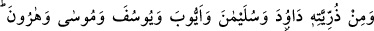
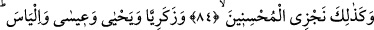
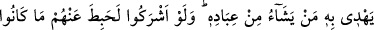
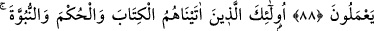
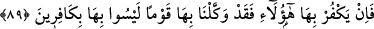
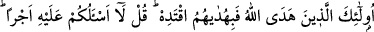
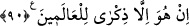

PEYGAMBERLERİN YOLUNA
TÂBİ OLMAK
84. Biz O’na İshak ve (İshak’ın oğlu) Yakub’u da armağan ettik; hepsini de
doğru yola ilettik. Daha önce de Nuh’u ve O’nun soyundan Davud’u, Süleyman’ı,
Eyyub’u, Yusuf’u, Musa’yı ve Harun’u doğru yola iletmiştik; Biz iyi davrananları
işte böyle mükâfatlandırırız.
85. Zekeriyya, Yahya, İsa ve İlyas’ı da (doğru yola iletmiştik). Hepsi de (sâlih)
iyilerden idi.
86. İsmail, Elyesa’, Yunus ve Lût’u da (hidayete erdirdik). Hepsini âlemlere üstün
kıldık.
87. Onların babalarından, çocuklarından ve kardeşlerinden bazılarına da (üstün
meziyetler verdik). Onları seçkin kıldık ve doğru yola ilettik.
88. İşte bu, Allah’ın hidayetidir, kullarından dilediğini ona iletir. Eğer onlar da
Allah’a ortak koşsalardı yapmakta oldukları amelleri elbette boşa giderdi.
89. İşte onlar, kendilerine kitap, hikmet ve peygamberlik verdiğimiz kimselerdir.
Eğer onlar (kâfirler) bunları inkâr ederse şüphesiz yerlerine bunları inkâr
etmeyecek bir toplum getiririz.
90. İşte o peygamberler Allah’ın hidayet ettiği kimselerdir. Sen de onların yoluna
uy. De ki: Ben buna (peygamberlik görevime) karşılık sizden bir ücret istemiyorum.
Bu (Kur’an) âlemler için ancak bir öğüttür.